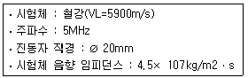
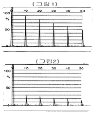
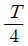
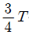
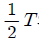
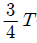
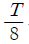
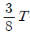
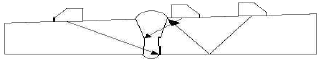
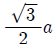

초음파비파괴검사기사(구) (2006-08-06 기출문제)
1과목: 초음파탐상시험원리
1. 재료 내부로 전파하는 초음파는 감쇠한다. 이 감쇠의 주된 원인은?
- 공전현상
- 직진과 굴절
- 자력운동
- 산란과 흡수
(정답률: 알수없음)

2. 어떤 매질 내에서 음파가 전달되는 속도를 나타내는 일반은?
- 음속(V)=탄성계수 / 밀도
- 음속(V)=인장강도× 음향 임피던스
- 음속(V)=(탄성계수 / 밀도)1/2
- 음속(V)=(인장강도× 음향 임피던스)1/2
(정답률: 알수없음)
3. 주조품과 같이 초대한 결정입자 구조의 금속을 초음파 탐상 시험할 때 발생할 수 있는 요인으로 틀린 것은?
- 잡음 신호가 많아진다.
- 저면 반사에코의 크기가 줄어든다.
- 감쇠현상이 커 침투력이 감소한다.
- 결정 입자의 크기가 조대하므로 침투력이 증가한다.
(정답률: 알수없음)
4. 펄스 반사법을 이용하여 알루미늄을 종파탐상 시험할 때 탐상면으로부터 10mm 깊이에 불연속이 존재함을 알았다. 이 때 초음파가 입사하여 CRT 상에 불연속을 나타낼 때까지 걸리는 시간은? (단, 알루미늄의 음파속도는 종파 : 2.5× 105인치/s, 알루미늄의 음파속도는 횡파 : 1.2× 105인치/s)
- 32초
- 3.2× 10-6초
- 64초
- 6.4× 10-6초
(정답률: 알수없음)
5. 다음 중 빔의 퍼짐이 적고 감도와 분해능이 가장 우수한 탐촉자는?
- 5Q10N
- 5Q20N
- 10Q10N
- 10Q20N
(정답률: 알수없음)
6. 두께 10mm 미만의 강판에 존재하는 라미네이션의 검출에 관한 초음파 탐상시험의 설명 중 옳은 것은?
- 탐촉자에 의한 경사각 탐상이 유리하다.
- 탠덤법에 의한 경사각 탐상이 유리하다.
- 수직탐상에 의한 다중반사법의 탐상이 유리하다.
- 수직탐상에 의한 지면에코를 탐상하는 것이 유리하다.
(정답률: 알수없음)
7. 다음 중 진동자의 펄스폭 조절은 무엇으로 조절하는가?
- 동축 케이블
- 댐핑재
- 보호막
- 탐촉자 튜브
(정답률: 알수없음)
8. 초음파 탐상시험에서 제 1 임계각은 무엇을 나타내는 것인가?
- 횡파의 반사각이 90°가 되었을 때의 입사각
- 종파의 굴절각이 90°가 되었을 때의 입사각
- 반사각과 굴절각이 동일할 때
- 입사각과 바사각의 합이 90° 일 때
(정답률: 알수없음)
9. 다음 중에서 비파괴검사의 적용이 적절한 것은?
- 스테인리스강의 내부에 존재하는 결함의 깊이를 측정하기 위해서는 방사선 투과검사를 선정한다.
- 알루미늄 주조품의 표면 근처 결함을 검출하기 위해서는 자분탐상시험을 선정한다.
- 동관의 표층부 결함을 검출하기 위해서는 와전류 탐상시험을 선정한다.
- 다공질 강재의 표면결함 검출을 위해서는 초음파 탐상시험을 선정한다.
(정답률: 알수없음)
10. 시험체에 종파가 굴절 전파하도록 제작된, 특수한 목적에 또는 오스테나이트스테인리스강 용접부 검사 등에 이용되는 탐촉자는?
- 집속경사각 탐촉자
- 종파경사각 탐촉자
- 광대역 탐촉자
- 타이어 탐촉자
(정답률: 알수없음)
11. 알루미늄과 강의 계면에서 음압반사율은 몇 %인가? (단, 알루미늄 : VL=6320m/s, 밀도 = 2700kg/ m3, 강 : VL=5920m/s, 밀도 = 7850kg/m3 )
- 13%
- 46%
- 75%
- 100%
(정답률: 알수없음)
12. 에코 A를 4dB 올려 에코 B와 동일한 높이로 하면 에코 A와 에코 B의 진폭의 비는 어떻게 되는가?
- 1.6배
- 2.6배
- 3배
- 6배
(정답률: 알수없음)
13. 초음파의 성질을 설명한 것 중 틀린 것은?
- 가청음보다 파장이 길다.
- 빛과 같이 직진성이 있다.
- 강과 공기 등 매질의 경계에서 반사 또는 굴절한다.
- 빛보다는 파장이 길고 보통의 전파보다는 짧다.
(정답률: 알수없음)
14. Z와 Y축에 평행하고 X축에 수직인면을 갖는 결정체를 무엇이라 하는가?
- Y-cut
- X-cut
- Z-cut
- XY-cut
(정답률: 알수없음)
15. 다음의 경우 근거리 음장은 얼마(mm)인가?

- 4.2
- 42.4
- 8.5
- 85
(정답률: 알수없음)
16. 탐촉자의 주사방법 중 탐촉자를 용접선과 평행하도록 이동하며 용접선 중심과 거리를 일정하게 하여 주사하는 방법은?
- 전후 주사
- 좌우 주사
- 목돌림 주사
- 진자 주사
(정답률: 알수없음)
17. 다음 설명 중 적절하지 못한 것은?
- 근거리음장 거리를 최소화하기 위해 직경이 큰 진동자를 사용한다.
- 근거리음장 거리를 최소화하기 위해 주파수가 낮은 진동자를 사용한다.
- 초음파 빔의 분산각을 작게 하기 위해 직경이 큰 진동자를 사용한다.
- 초음파 빔의 분산각을 작게 하기 위해 주파수가 높은 진동자를 사용한다.
(정답률: 알수없음)
18. 초음파 중 종파의 특성 설명으로 틀린 것은?
- 파 중에서 속도가 제일 빠르다.
- 같은 주파수에서 가장 긴 파장을 가진 파다.
- 같은 주파수에서 투과력이 제일 좋다.
- 입자의 운동은 파의 진행방향에 대해 수직이다.
(정답률: 알수없음)
19. 다음 중 초음파 탐상시험의 진동 양식에 따른 파(波)의 분류에 해당하지 않은 것은?
- 횡파
- 표면파
- 판파
- 복사파
(정답률: 알수없음)
20. 초음파 탐상시험을 방사선 투과시험과 비교했을 때의 장점을 설명한 것으로 틀린 것은?
- 일반적으로 탐상기기가 경량(輕量)이다.
- 검사체의 한쪽 면만 접근 가동하면 검사할 수 있다.
- 결함의 방향과 경사 각도에 무관하며 영국적으로 기록 보존이 가능하다.
- 결함의 판두께 방향의 위치 추정이 용이하며 방사선에 의한 장해의 위험이 없다.
(정답률: 알수없음)
2과목: 초음파탐상검사
21. 초음파 탐상시험에서 수침법에 비하여 직접 접촉법이 갖는 가장 큰 문제점은 무엇인가?
- 전이손실이 크다.
- 펄스 간섭이 적다.
- 면상 결함 검출능력이 떨어진다.
- 결함의 종류 식별이 곤란하다.
(정답률: 알수없음)
22. 다음 중 종파의 진행속도가 가장 빠른 물질은?
- 베릴륨(beryllium)
- 알루미늄(aluminum)
- 스테인리스 강(stainless steel)
- 강(steel)
(정답률: 알수없음)
23. 종파 수직 탐상시 두 매질의 경계를 통과할 때 음압 반사율이 가장 큰 경우는?
- 철강 → 물
- 알루미늄 → 기름
- 글리세린 → 물
- 철강 → 공기
(정답률: 알수없음)
24. 초음파 탐상기에서 이득형(gain) 조정장치를 사용하여 어떤 에코의 높이를 10dB 내렸을 때 에코 높이 변화는?
- 처음 에코의 3.1배 높이가 된다.
- 처음 에코의 0.3배 높이가 된다.
- 처음 에코의 1.4배 높이가 된다.
- 처음 에코의 0.9배 높이가 된다.
(정답률: 알수없음)
25. 모재 두께 20mm인 용접부를 60° 경사각 탐촉자를 이용하여 탐상했을 때 초음파 빔 거리가 70mm에서 결함이 검출되었다면, 두께 결함은 모재 표면에서 탐촉자 입사점으로부터 어느 위치(탐촉자-결함거리)에 존재하는가? (단, sin 60° = 0.87로 계산할 것 )
- 약 17mm
- 약 23mm
- 약 61mm
- 약 80mm
(정답률: 알수없음)
26. 펄스반사식 초음파 탐상기에서 동기회로는 탐상기의 무엇을 조정하는가?
- 펄스길이
- 게인
- 펄스 반복 주파수
- 소인길이
(정답률: 알수없음)
27. 결함에코의 높이가 비교적 낮고 폭이 좁은 특성이 있으며, 진자주사를 하거나 반대쪽에서 주사를 하여도 거의 일정한 펄스 강도를 나타냈다면 검출된 결함은 다음 중 어느 것에 가장 가까운가?
- 균열
- 기공
- 슬래그 혼입
- 융합불량
(정답률: 알수없음)
28. 다음 중 음향 임피던스의 차가 가장 큰 물질들로 조합된 것은?
- 글리세린 - 물
- 알루미늄 - 물
- 철 - 알루미늄
- 알루미늄 - 글리세린
(정답률: 알수없음)
29. 초음파 탐상시험시 시험주파수를 선정할 때는 여러 가지 사항을 고려하여야 한다. 고려사항의 설명으로 맞는 것은?
- 주파수를 낮추는 것이 결함검출 동력을 높이는데 유효하다.
- 결정립이 초대한 재료를 검사할 경우 높은 주파수를 선택한다.
- 면 모양의 결함탐상시 필요 이상으로 높은 주파수의 적용은 피하는 것이 좋다.
- 결함의 위치결정의 정밀도를 높이기 위해 낮은 주파수를 사용한다.
(정답률: 알수없음)
30. 용접부 탐상을 위해 준비해야 할 사항 중 잘못 설명된 것은?
- 용접부 인접 모재면에 스패터 등의 부착물이 있으면 스크레퍼 등으로 제거해야 한다.
- 4MHz 이상의 경사각 탐촉자 사용을 위한 감도조정시 반드시 글리세린을 접촉 매질로 사용해야 한다.
- 시험감도 조정을 위해 필요시 표준시험편 또는 대비시험편을 사용해야 한다.
- 거친 표면은 그라인딩으로 다듬질한 후 검사하기도 한다.
(정답률: 알수없음)
31. 집속형 수직탐촉자에 대한 설명으로 옳은 것은?
- 초음파 빔의 강도를 낮추기 위해 음향렌즈를 부착한 것이다.
- 빔을 집속함으로써 최대 강도점이 진동자 쪽으로 이동하게 되고 유효 범위가 짧아진다.
- 집속된 빔으로 인해 탐상감도를 높이고 큰 불연속의 검출에 유용한 방법이다.
- 초음파 에너지는 한 곳에 집중되지만 집중된 부위 이외에 반사 감도가 더 많이 발생한다.
(정답률: 알수없음)
32. 초음파 에코를 CRT 스크린이나 다른 기록장치에 나타내는 방식에 관한 설명으로 이 중에서 B주사 표시법에 해당하는 것은?
- 수평축은 경과시간을 나타내고 수직축은 에코 높이를 나타내는 방법이다.
- 시험체 내의 결함이 초음파 빔과 일직선상에 여러 개 있는 경우에는 각각 분리되어 나타낸다.
- 초음파 빔과 탐촉자 주사방향에 수직으로 있는 결함은 넓이를 기록할 수 있다.
- 일반적으로 시험체의 저면측 결함이 표면 결함보다 길게 나타난다.
(정답률: 알수없음)
33. 판재를 경사각 초음파 탐상법으로 검사할 때 다음 중 가장 검출하기 어려운 결함은?
- 초음파빔에 수직으로 존재하는 균열
- 방향이 불규칙한 개재물
- 초음파빔 진행과 평행한 라미네이션
- 작은 불연속이 군집된 경우
(정답률: 알수없음)
34. 시험편 방식으로 탐상감도를 조정하여 동일한 두께를 가진 2장의 강판 A와 B를 수직 탐상하였을 때 각각 그림 1, 그림 2의 탐상도형을 얻었다. 결함에코가 발견되지 않았다면 다음 설명 중 올바른 것은?

- A는 B보다 조직이 조대하고 감쇄가 심하다.
- B는 A보다 미소한 결함이 많다.
- B는 A보다 저면부의 표면 거칠기가 나쁘다.
- B는 A와 감쇠는 거의 같으나 탐촉자의 접촉이 나쁘다.
(정답률: 알수없음)
35. 초음파 탐상시험에서 용접부의 결함을 등급분류할 때 직접 필요한 항목은?
- 시험주파수
- 탐속자의 공칭굴절각
- 진동자의 크기
- 결함 에코 높이의 영역
(정답률: 알수없음)
36. AVG선도 또는 DGS선도에 나타나지 않는 정보는?
- 거리(distance)
- 증폭(gain)
- 음파의 속도
- 결함의 크기
(정답률: 알수없음)
37. 후판 용접부의 경사각탐상의 경우 2개의 경사각 탐촉자를 용접부의 한쪽에서 전후로 배열하여 하나는 송신용, 하나는 수신용으로 하는 탐상방법은?
- 탠덤 주사
- 두갈래 주사
- 경사평행 주사
- 전후 주사
(정답률: 알수없음)
38. 초음파 진동자로 현재 압전재료인 PZT를 많이 사용한다. PZT에서의 종파 속도가 약 4000m/s라 할 때 5MHz의 종파를 발생시키려면 그 두께를 얼마로 하여야 하는가?
- 0.2mm
- 0.4mm
- 0.6mm
- 0.9mm
(정답률: 알수없음)
39. 곡률을 갖는 시험체의 원주 용접부를 탐상할 때 RB-A6 대비시험편을 사용하여 감도보정을 하려고 한다. 다음 중 시험편에 대한 내용으로 틀린 것은?
- 곡률반경은 시험체의 곡률반경의 0.9배 이상 1.5배 이하로 한다.
- 살두께는 시험체 살두께의 2/3배 이상 1.5배 이내로 한다.
- 표준구명은 ø4mm의 관통구멍으로 한다.
- 나비는 60mm 이상으로 한다.
(정답률: 알수없음)
40. 초음파 탐상검사시 접촉매질이 가져야 할 조건은?
- 탐촉자의 음향 임피던스보다 낮아야 한다.
- 탐촉자의 음향 임피던스보다 높아야 한다.
- 탐촉자와 검사물의 중간정도 음향 임피던스를 갖는 것이 좋다.
- 접촉매질의 막은 두꺼울수록 좋으며 탐촉자와 검사물의 음향 임피던스값과는 무관하다.
(정답률: 알수없음)
3과목: 초음파탐상관련규격및컴퓨터활용
41. 보일러 및 압력용기에 대한 대형 단강품의 초음파 탐상시험(ASME Sev. V, Art. 23 SA 388)에 따라 저면반사법(back reflection technique)으로 수직탐상 중에 재교정을 실시하였더니 게인(gain)레벨이 15% 증가하였다. 어떤 조치를 취하여야 하는가?
- 재교정 전에 실시한 부분은 다시 재검사한다.
- 재교정 전에 실시한 부분 중 홈으로 기록된 부분만 재평가 한다.
- 기준보다 높은 레벨이므로 재교정 전에 실시한 부분은 재검사하지 않는다.
- 감독관과 협의 한다.
(정답률: 알수없음)
42. 알루미늄관 용접부의 초음파 경사 각 탐상시험 방법(KS B ⑤21)에 의한 탐상방법 및 시험 결과의 분류방법 설명으로 옳지 않은 것은?
- 홈을 평가하기 위한 레벨 중 A평가 레벨은 에코 높이의 레벨을 “HRL(기준레벨)-12dB"로 한다.
- 홈 에코 높이의 레벨이 A평가레벨을 넘는 것은 “C종 흠” 으로 판정한다.
- 동일한 흠으로 간주하는 것은 흠과 흠의 간격이 큰 쪽 흠 지시길이보다 짧은 경우, 깊이가 동일하다고 간주할 때에 적용한다.
- 인접 흠을 동일한 흠으로 간주할 경우 간격도 포함시켜 연속한 흠으로 취급한다.
(정답률: 알수없음)
43. 강 용접부의 초음파 자동탐상 방법(KS B 0894)에서 탐상기에 필요한 기능 및 상등에 대한 설명 중 틀린 것은?
- 탐상기의 게인 조정기는 1스텝 1dB이하로 합계의 조정량은 50dB 이상으로 한다.
- 증폭 직선상의 성능은 ± 3%의 범위내로 한다.
- 시간축의 직선상의 성능은 ± 3%의 범위 내로 한다.
- 감도 여유 값의 성능은 40dB이상으로 한다.
(정답률: 알수없음)
44. 알루미늄의 맞대기 용접부 초음파 경사각 탐상시험 방법(KS B 0897)에 규정된 탐상장치 및 부속품에 대한 설명이 바르게 기술된 것은?
- 경사각 탐촉자에 사용되는 공칭주파수는 5MHz이다.
- 탐상기의 시간축의 직선상은 실물크기의 5% 이내여야 한다.
- 경사각 탐촉자의 양측에는 적어도 10mm의 범위에 2mm의 간격으로 유도 눈금이 새겨져야 한다.
- 경사각 탐촉자의 공칭굴절각은 35°, 50°, 70° 중 하나여야 한다.
(정답률: 알수없음)
45. 강 용접부의 초음파 탐상시험 방법(KS B 0896)에서 경사각 탐상시 영역구분에 대한 H선, M선 및 L선의 결정 설명 중 틀린 것은?
- 작성된 에코 높이 구분선 중 적어도 하위에서 3번째 이상의 선을 선택하여 H선으로 한다.
- H선은 원칙적으로 탐상감도를 조정하기 위한 기준선으로 한다.
- H선은 원칙적으로 홈 에코의 평가에 사용되는 빔 노정의 범위에서 그 높이가 40%이하가 되지 않는 선으로 한다.
- H선보다 3dB 낮은 에코 높이 구분선을 M선으로 하고, 6dB 낮은 에코 높이 구분선을 L선으로 한다.
(정답률: 알수없음)
46. 보일러 및 압력용기에 대한 용접부의 음파 탐상검사(ASME Sec.V Art. 4 app.C)에 따라 용접부를 수직탐상하는 경우, 수직 빔 교정의 일반적인 절차를 위해 필요한 구멍의 크기는?

와
측 구멍
와
측 구멍
와
측 구멍- 0.5스킵과 2스킵에서 최대 신호가 오는 구멍
(정답률: 알수없음)
47. 강 용접부의 초음파 탐상시험 방법(KS B 0896)에 관한 탐상기에 필요한 성능에 대해 설명한 것이다. 옳은 것은?
- 증폭 직선성은 5%의 범위 내로 하여야 한다.
- 시간축 직선상은 ± 1%의 범위 내로 하여야 한다.
- 전원전압 변동에 대한 안정도는 사용 전압 범위 내에서 감도 변화는 ± 5dB의 범위 내로 하여야 한다.
- 전원전압 변동에 대한 안정도는 세로축, 시간측 및 DAC기점의 이동량은 풀스케일의 ± 3%의 범위내로 한다.
(정답률: 알수없음)
48. 보일러 및 압력용기에 대한 재료의 초음파 탐상검사 (ASME Sec.V Art.5)에 따라 탐상장치의 스크린 높이 직선성 및 증폭 직선성을 검사해야 하는 최대 주기 기간은? (단, 연속적으로 사용치 않음 )
- 8시간
- 30일
- 3개월
- 6개월
(정답률: 알수없음)
49. 보일러 및 압력용기에 대한 대형 단강품의 초음파 탐상검사 (ASME Sec.V Art. 23 SA 388)에 따라 오스테나이트 스테인리스강 단강품을 검사하는 경우 펄스에코 초음파 탐상기에 사용되는 주파수는 얼마이하에서 작동되어야 하는가?
- 5MHz
- 2.5MHz
- 1MHz
- 0.4MHz
(정답률: 알수없음)
50. 강 용접부의 초음파 탐상시험 방법(KS B 0896)에서 시험결과의 분류방법 시, 동일하다고 간주되는 깊이에서 흠과 흠의 간격이 큰 쪽의 흠의 지시길이와 같거나 그것보다 짧은 경우는 어떻게 분류하는가?
- 독립 결함으로 짧은 쪽 길이를 기준한다.
- 독립결함으로 긴 쪽 길이를 기준한다.
- 연속 결함으로 두 흠 길이를 합한 것을 기준한다.
- 연속 결함으로 두 흠 길이 및 그들 사이 간격까지 합한 것을 기준한다.
(정답률: 알수없음)
51. 보일러 및 압력용기에 대한 재료의 초음파 탐상검사 (ASME Sec.V, Art. 5)에서 요구하는 작업 절차서에 꼭 포함되어야 할 내용이 아닌 것은?
- 접촉 매질의 적용방법
- 시험대상품의 제품 형태
- 시험대상품의 표면조건
- 시험대상품 재료의 종류
(정답률: 알수없음)
52. 강용접부의 초음파 탐상시험 방법(KS B 0896)에 따라 그림과 같이 맞대기 이음의 경사각 탐상시 판두께 40mm이하의 경우 한쪽면 양쪽에서 탐상할 때 사용하는 탐촉자의 공칭 굴절각으로 올바른 것은?

- 70°
- 70° 또는 60°
- 70° 또는 60°와 45° 병용
- 70°와 60° 병용 또는 60°와 45° 병용
(정답률: 알수없음)
53. 보일러 및 압력용기에 관한 초음파 탐상시험( ASME Sec.V, Art.5) 규정에서 니켈합금에 사용되는 접촉 매질은 몇 ppm이상의 황을 포함하지 않아야 하는가?
- 250
- 560
- 1000
- 2000
(정답률: 알수없음)
54. 강 용접부의 초음파 탐상시험 방법(KS B 0896)에 따라 경사각 탐상시 초음파가 통과하는 부분의 모재는 필요에 따라 미리 수직탐상하여 방해가 되는 흠을 검출하여 기록한다. 이 경우 수직탐상할 때 탐상감도는 어떻게 하는가?
- 건전부 밑면 에코 높이가 80%되게 한다.
- 건전부 밑면 에코 높이가 50%되게 한다.
- 건전부의 제 2회 바닥면 에코 높이가 80%되게 한다.
- 건전부의 제 2회 바닥면 에코 높이가 50%되게 한다.
(정답률: 알수없음)
55. 초음파 탐상 시험용 표준시험편(KS B 0831)에는 시험편의 종류에 다른 재료검사에 대하여 규정하고 있다. G형 STB 시험편의 재료검사에 대한 설명으로 잘못된 것은?
- 재료의 종파 감쇠 계수는 5MHz에서 5dB/m 이하로 한다.
- 재료의 종파 감쇠계수는 10MHz에서 20dB/m 이하로 한다.
- 직접 접촉법에 따라 공칭 지름 20mm인 탐촉자를 사용한다.
- 수침법에 따라 주파수 5MHz, 공칭지름 20mm의 탐촉자를 사용한다.
(정답률: 알수없음)
56. 다음 중 인터넷 표준문서 언어가 아닌 것은?
- XML
- DSSL
- HTML
- SGML
(정답률: 알수없음)
57. 인터넷 익스플로러 6.0으로 FTP사이트에 접속할 때 ID와 password를 주소창에 주소와 같이 넣어 접속하는 방법을 옳은 것은?(단, 사이트는 korea.go.kr 이고, ID는 abcd이고, Password는 1234라 가정한다)
- ftp;//abcd:1234@korea.go.kr
- ftp;//abcd,1234@korea.go.kr
- ftp;//abcd.1234@korea.go.kr
- ftp;//abcd;1234@korea.go.kr
(정답률: 알수없음)
58. 컴퓨터의 특성에 대한 설명이다. 맞지 않는 것은?
- 단일화된 입출력 매체를 갖는다.
- 데이터 처리비용을 최소화할 수 있다.
- 대량의 데이터 처리에 적합하다.
- 자동화에 기여한다.
(정답률: 알수없음)
59. 프로그램 명령어들을 해석하고 수행하기 위해 주기억장치와 상호 작용하는 동시에 입ㆍ출력장치와 보조기억장치들과 통신을 하는 장치를 무엇이라 하는가?
- 중앙처리장치
- 네트워크장치
- 프린터
- 디스크
(정답률: 알수없음)
60. 컴퓨터 연산 장치 중 연산 후 결과 값을 일시적으로 기억하는 장치는?
- accumulator
- instruction register
- data register
- status register
(정답률: 알수없음)
4과목: 금속재료학
61. Mg-Al계 합금에 소량의 Zn과 Mn을 첨가한 마그네슘 합금은?
- 엘렉트론(elektron)합금
- 하스텔로이(hastelloy)
- 모넬(monel)
- 자마크(zamak)
(정답률: 알수없음)
62. 강 내에 존재하는 황(S)에 의하여 나타나는 취성현상을 어떤 취성이라 하는가?
- 고온취성
- 뜨임취성
- 청열취성
- 저온취성
(정답률: 알수없음)
63. 고강도 알루미늄 합금인 두랄루민의 주요 구성원소는?
- Al-Cu-Mn-Mg
- Al-Ni-Co-Mg
- Al-Ca-Si-Mg
- Al-Zn-Si-Mg
(정답률: 알수없음)
64. 로엑스(low-ex) 합금의 설명으로 옳은 것은?
- 내마모성이 좋다.
- 열팽창계수가 크다.
- 고온 강도가 낮다.
- 합금조성은 Al-1% Si 12%Cu-15%MC-1.8%Ni이다.
(정답률: 알수없음)
65. 순철의 평행상태도에서 온도가 상승함에 따라 r-Fe⇆δ-Fe 로 바뀔 때의 변태를 무엇이라 하며, 이 때의 온도는 몇 ℃인가?
- A1변태, 약 723℃
- A2변태, 약 768℃
- A3변태, 약 910℃
- A4변태, 약 1400℃
(정답률: 알수없음)
66. Al-Mg-Si계 합금의 시효적출 과정으로 옳은 것은?
- GP영역→θ안정상→θ'중간상→과포화고용체
- 과포화고용체→GP영역→θ'중간상→θ안정상
- θ안정상→θ'중간상→GP영역→과포화고용체
- θ'중간상→θ안정상→과포화고용체→GP영역
(정답률: 알수없음)
67. 강의 표면에 Al을 침투시켜 내 scale성을 증가시키는 것을 목적으로 하는 표면 경화처리는?
- 크로마이징
- 실리코나이징
- 브로나이징
- 칼로라이징
(정답률: 알수없음)
68. 다음의 원소들 중에서 응고할 때 수축하지 않고 오히려 팽창하는 원소는?
- Bi
- Sn
- Al
- Cu
(정답률: 알수없음)
69. 금속 초미립자의 특성으로 옳은 것은?
- 금속 초미립자는 융점의 금속덩어리보다 낮다.
- 저온에서 열저항이 매우 커서 열의 부도체이다.
- 활성은 강하나 화학반응은 일으키지 않는다.
- Fe계 합금 초미립자는 금속덩어리보다 자성이 약하다.
(정답률: 알수없음)
70. Fe-C 평형 상태도에서 공정조직을 무엇이라 하는가?
- 페라이트(Ferrite)
- 펄라이트(pearlite)
- 레데부라이트(ledeburite)
- 오스테나이트(austenite)
(정답률: 알수없음)
71. 다음은 스테인리스강에 대한 설명으로 틀린 것은?
- Cr과 Ni은 스테인리스강의 기본적인 합금원소이다.
- 오스테나이트계 스테인리스강은 자성이 강하다.
- 조직에 따라서 오스테나이트계, 마텐자이트계 및 페라이트계 스테인리스강으로 분류한다.
- 탄화물(Cr23G6)은 오스테나이트입계에 석출하여 입계부식의 원인이 된다.
(정답률: 알수없음)
72. 함유 베어링(oilless bearing)의 제조 방법으로 옳은 것은?
- 전착법(電着法)
- 박야금법(薄冶金法)
- 분말야금법(粉末冶金法)
- 일방향응고법(一方向凝固法)
(정답률: 알수없음)
73. 특수강인 엘린바(elinvar)를 설명한 것 중 옳은 것은?
- 열팽창계수가 아주 크다.
- 규소계 합금 금속이다.
- 구리가 다량 함유되어있어 전도율이 좋다.
- 초음파 진동소자, 계측기기, 전자장치 등에 사용한다.
(정답률: 알수없음)
74. 고망간강(하드필드강)이 내마모성을 갖는 주요 원인으로 옳은 것은?
- 고탄소, 고망간에 의하여 강력한 페라이트 조직을 갖기 때문이다.
- 오스테나이트가 마텐자이트로 변태하여 고온에서 크리프 저항이 대단히 크기 때문이다.
- 고탄소에 의하여 마모성이 강한 탄화물(M3C)이 형성되기 때문이다.
- 가공경화가 가능한 오스테나이트 단상 조직을 갖기 때문이다.
(정답률: 알수없음)
75. BCC 금속의 한 변에 길이가 a, 단위격자의 소속 원자수가 2, 배위수가 8, 근접원자 간 거리가

일 대 충진율(%)은?- 56%
- 68%
- 74%
- 82%
(정답률: 알수없음)
76. 다음 중 표면경화법에 속하지 않는 것은?
- 노멀라이징
- 고주파 담금질
- 침탄법
- 질화법
(정답률: 알수없음)
77. 냉간가공(cold working)에 대한 설명으로 옳은 것은?
- 항복점 연신을 나타내는 강을 항복점이상으로 냉간가공 하여 되면 항복점과 항복점 연신이 없어진다.
- 전위밀도가 감소하여 강도가 약해진다.
- 냉간가공으로 생긴 잔류응력이 재료 내에 압축 응력으로 하면 피로강도가 나빠진다.
- 냉간가공은 재결정온도 이상에서 가공한 것을 말한다.
(정답률: 알수없음)
78. 비정질합금(非晶質合金)의 특성으로 옳은 것은?
- 고온에서는 결정화하여 전혀 다른 재료가 된다.
- 균질한 재료이고, 결정이방성이 있다.
- 전기저항이 작고, 온도의 의존성이 크다.
- 강도는 낮고 연성은 크며, 가공 경화를 일으킨다.
(정답률: 알수없음)
79. 내식성 알루미늄합금에 어떤 원소가 첨가되면 내식성을 악화시키지 않고 소량만으로도 강도를 개선할 수 있는가?
- Fe
- Ni
- Cu
- Mg
(정답률: 알수없음)
80. 다음 중 경화능을 향상시키는 원소의 영향이 큰 순서대로 나열된 것은?
- Cu ＞Mn ＞B ＞Cl
- Cr ＞Cu ＞B ＞Mn
- B ＞Mn ＞Cr ＞Cu
- Mn ＞Cr ＞Cu ＞B
(정답률: 알수없음)
5과목: 용접일반
81. 진공 중 용접하므로 불순 가스에 의한 오염이 적고 활성 금속의 용접 및 용융점이 높은 텅스텐, 몰리브덴의 용접이 가능한 것은?
- 가스 용접
- 플라스마 아크 용접
- 잠호 용접
- 전자빔 용접
(정답률: 알수없음)
82. 철분절단에서 철분은 몇 메시(mesh)정도를 사용하는가?
- 약 20
- 약 50
- 약 200
- 약 1000
(정답률: 알수없음)
83. 가스용접에서 스테인리스강, 스텔라이트, 모넬메탈 등의 용접에 사용되며, 금속 표면에 침탄작용을 일으키기 쉬운 가스 불꽃은?
- 아세틸렌 과잉 불꽃
- 중성 불꽃
- 약한 산화 불꽃
- 산소 과잉 불꽃
(정답률: 알수없음)
84. 피복 아크 용접봉의 피복제 주요 역할이 아닌 것은?
- 아크의 발생을 쉽게 하고 안정시킨다.
- 용착 금속의 탈산 정련 작용을 한다.
- 모재의 수분제거 작업을 한다.
- 슬래그를 제거하기 쉽게 하고, 파형이 고운 비드를 만든다.
(정답률: 알수없음)
85. 피복 금속 아크 용접봉의 용융속도에 관한 설명으로 맞는 것은?
- 용융속도는 아크 전류에 반비례한다.
- 용융속도는 아크 전류에 비례한다.
- 용융속도는 아크 전압에 반비례한다.
- 용융속도는 아크 전압에 비례한다.
(정답률: 알수없음)
86. 서브머지드 아크 용접에 사용되는 와이어(wire)표면에 구리 도금하는 이유로 가장 적합한 것은?
- 콘택트 팁과 전기적 접촉을 좋게 하고 녹이 발생하는 것을 방지한다.
- 용착 금속의 균열을 방지하기 위해서이다.
- 용접 속도를 증가시키기 위해서이다.
- 비드 형상을 좋게 하기 위해서이다.
(정답률: 알수없음)
87. 용접 후 수축 변형을 최소화하기 위한 방법이 아닌 것은?
- 용접시간을 최소화한다.
- 용접 패스 수를 최소화한다.
- 중심축을 기준으로 용접부를 균형되게 한다.
- 각 패스의 용접길이를 길게 하면서 용접을 계속한다.
(정답률: 알수없음)
88. 내용적 40L의 산소용기에 140kgf/cm2의 산소가 들어있다. 1시간당 350L를 사용하는 토치를 쓰고 이 때의 혼합기가 1:1의 중성화염이면 이론적으로 약 몇 시간이나 사용하겠는가?
- 16
- 20
- 32
- 46
(정답률: 알수없음)
89. 제품의 한 쪽 또는 양쪽에 돌기를 만들어 이 부분에 용접전류를 집중시켜 압접하는 용접법은?
- 프로젝션 용접
- 맥동 용접
- 업셋 용접
- 퍼커션 용접
(정답률: 알수없음)
90. 오스테나이트계 스테인리스강을 1시간 정도 가열하여 고용화 처리하여 급랭할 때 가장 적합한 고용화 처리 온도는?
- 약 700~750℃
- 약 750~850℃
- 약 850~920℃
- 약 1000~ 1⑤0℃
(정답률: 알수없음)
91. 다음 산소용기에 각인되어 있는 기호 중 TP가 의미하는 것은?
- 내압시험압력
- 최고충전압력
- 용기중량
- 내용적
(정답률: 알수없음)
92. 다음 용접방법 중 저항 용접법인 것은?
- 심 용접
- 테르밋 용접
- 스터드 용접
- 경납땜
(정답률: 알수없음)
93. 아크 용접에서 직류 용접기의 정극성에 대한 설명으로 가장 적합한 것은?
- 모재의 용입이 얕다.
- 용접봉의 녹음이 빠르다.
- 비드 폭이 넓다.
- 용접봉을 (-)극, 모재를 (+)극에 연결한다.
(정답률: 알수없음)
94. 교류 용접기를 사용할 때 무부하 전압이 80V, 아크 전압이 30V, 아크 전류가 300A 라면 역률은 약 몇 %인가? (단, 내부손실은 4kW 이다.)
- 36
- 54
- 90
- 50
(정답률: 알수없음)
95. 용접전류가 200A, 아크 전압은 25V, 용접속도는 10cm / min 일 때 용접길이 1cm 당의 용접입열은 몇 Joule / cm인가?
- 4800
- 20000
- 30000
- 40000
(정답률: 알수없음)
96. 용접 후 용접-변형을 교정하기 위한 방법이 아닌 것은?
- 피닝법
- 역변형법
- 얇은 판에 대한 점 수축법
- 후판에 대한 가열 후 압력을 주어 수랭하는 법
(정답률: 알수없음)
97. 산소-아세틸렌 가스 절단시 절단조건으로 설명이 잘못된 것은?
- 모재 중 불연소물이 적을 것
- 슬래그의 유동성이 좋고 쉽게 이탈할 것
- 모재의 연소온도가 용융온도보다 높을 것
- 슬래그 용융온도가 모재의 용융온도보다 낮을 것
(정답률: 알수없음)
98. 불활성 가스 아크 용접법에 대한 설명 중 틀린 것은?
- 불활성 가스 아크 용접에서 쓴 불활성 가스의 연소열을 이용한다.
- TIG 용접에서는 텅스텐 전극을 사용한다.
- MIG 용접에서는 금속 전극을 사용한다.
- 불활성 가스로서는 Ar, He 등이 사용된다.
(정답률: 알수없음)
99. 용접에 의한 변형을 적게 하기 위하여 띄엄띄엄 용접한 다음 냉각된 용접부 사이를 용접하는 용접을 뜻하는 것은?
- 슬롯 용접
- 필릿 용접
- 단속 용접
- 스킵 용접
(정답률: 알수없음)
100. 아크 용접기의 구비조건에 대한 설명으로 틀린 것은?
- 역률은 나쁘고 효율은 좋아야 한다.
- 사용 중에 온도 상승이 작아야 한다.
- 전류조정이 용이하고 일정한 전류가 흘러야 한다.
- 아크 발생과 유지가 용이하고 아크가 안정되어야 한다.
(정답률: 알수없음)